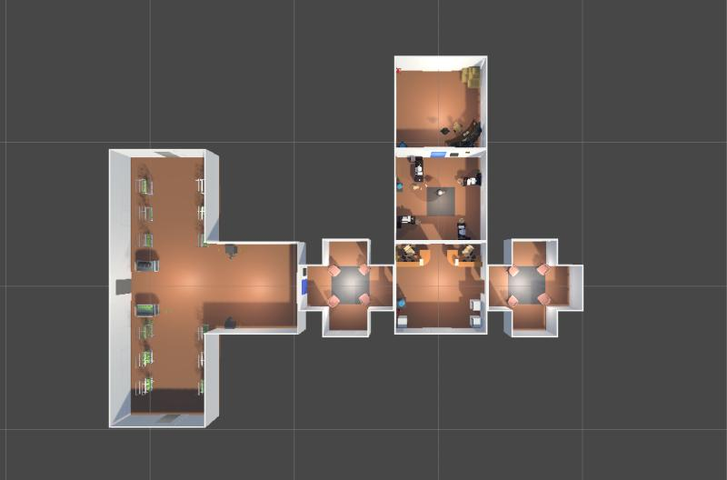

Développement d'un jeu vidéo en réalité virtuelle - Opération Vortex

Contexte du projet
« Opération Vortex » a été réalisé dans le
cadre d’un projet universitaire en deuxième année de BUT
Informatique appliqué à l'image numérique.
L’objectif était de concevoir un jeu
inédit permettant d’approfondir nos compétences en développement
Réalité Virtuelle. La consigne imposait la réalisation d’un jeu
vidéo avec le moteur, le langage et le genre de notre choix. En
option, il était suggéré d’intégrer des aspects de numérique
responsable et d’accessibilité.
Présentation du jeu
Nous avons développé « Opération Vortex »,
un jeu de braquage de banque en Réalité Virtuelle. Ce jeu est
généré procéduralement et propose une expérience roguelike.
Le joueur incarne un braqueur qui doit
atteindre la salle des coffres tout en évitant d’être repéré. La
difficulté augmente à chaque braquage. En cas de détection, le
joueur est envoyé en prison et doit tenter de s’en échapper. Il
dispose d’un QG personnalisable où il peut acheter des armes et
améliorer la décoration.
Il est possible de cumuler plusieurs
braquages sans revenir au QG, ce qui augmente la valeur du butin…
mais le risque d’échec aussi !
Fonctionnalités spécifiques
- Génération procédurale des niveaux.
- Mécaniques roguelike avec difficulté croissante.
- Mode daltonien intégré pour l’accessibilité.
- Personnalisation du QG et acquisition d’armes.
Technologies utilisées
- Unity : Moteur de jeu multiplateforme.
- Visual Studio : Environnement de développement intégré (IDE).
- GitLab : Plateforme collaborative pour le contrôle de version.
- Blender : Modélisation 3D lowpoly des objets du jeu.
- Trello : Gestion de projet et suivi des tâches.
Compétences développées
Techniques :
- Développement en Réalité Virtuelle sur Unity.
- Intégration de mécaniques de jeu procédurales et roguelike.
- Modélisation 3D avec Blender.
Transversales :
- Travail en équipe et collaboration sur GitLab.
- Gestion de projet avec Trello.
- Respect des normes d’accessibilité et de numérique responsable.
Conclusion : Retour d’expérience et apprentissage
Ce projet nous a permis de renforcer nos compétences en
développement de jeux en Réalité Virtuelle, en particulier avec
Unity et Visual Studio.
La collaboration sur GitLab et l’organisation via Trello nous ont
permis de mener le projet à bien dans les délais impartis.
Parmi les pistes d’amélioration, nous envisageons d’ajouter des
notifications en temps réel, des missions secondaires et la
gestion des braquages en coopération multijoueur.